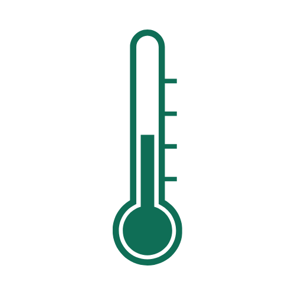
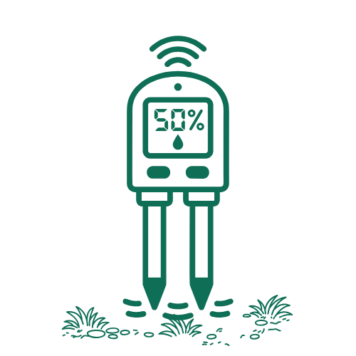

Indicadores chave de monitoramento
Mapa de Risco por Região
| Nível | Região | Focos | NDVI | Umidade | Tendência |
|---|---|---|---|---|---|
| CRÍTICO | Cerrado_TO_Setor_Norte | 31 | 0.16 | 7.0% | ↑ Crescente |
| CRÍTICO | Cerrado_MT_Setor_Leste | 23 | 0.18 | 8.5% | ↑ Crescente |
| CRÍTICO | Amazonia_AM_Setor_Norte | 18 | 0.21 | 11.0% | ↑ Crescente |
| ALERTA | Caatinga_BA_Setor_Central | 9 | 0.29 | 22.0% | ↑ Crescente |
| ALERTA | Pantanal_MS_Setor_Oeste | 7 | 0.35 | 29.0% | ↑ Crescente |
| ATENÇÃO | Cerrado_GO_Setor_Sul | 3 | 0.44 | 38.0% | — Estável |
| ATENÇÃO | MataAtlantica_SP_Setor_Vale | 2 | 0.49 | 43.0% | — Estável |
| NORMAL | Pampa_RS_Setor_Sul | 0 | 0.72 | 61.0% | — Estável |
| NORMAL | Amazonia_PA_Setor_Leste | 0 | 0.81 | 74.0% | — Estável |
Arduino — Dados em Campo

Temperatura 38.4°C ATENÇÃO
Umidade do Ar 22.1% ATENÇÃO